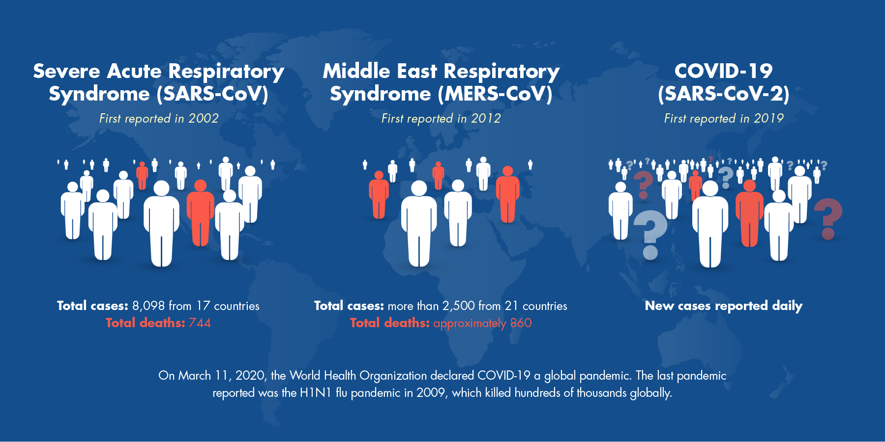

Coronaviruses are a large family of zoonotic viruses that cause illness ranging from the common cold to
severe respiratory diseases. Zoonotic means these viruses are able to be transmitted from animals to humans.
In humans, coronaviruses cause respiratory tract infections that can range from mild to lethal.
Mild illnesses include some cases of the common cold (which has other possible causes, predominantly
rhinoviruses), while more lethal varieties can cause SARS, MERS, and COVID-19.
There are several coronaviruses known to be circulating in different animal populations that have
not yet infected humans.
Coronavirus disease 2019 (COVID-19) is an infectious disease caused by severe acute respiratory
syndrome coronavirus 2 (SARS-CoV-2). The disease was first identified in December 2019 in Wuhan,
the capital of China's Hubei province, and has since spread globally, resulting in the ongoing
2019–20 coronavirus pandemic.
Over the past 15 years, there has been no shortage of articles and white papers issuing dire
warnings that a global pandemic involving a new respiratory disease was only a matter of time.
On BBC Future in 2018, it was reported that experts believed a flu pandemic was only a matter of
time and that there could be millions of undiscovered viruses in the world. In 2019, US President
Donald Trump’s Department of Health and Human Services carried out a pandemic exercise named
“Crimson Contagion”, which imagined a flu pandemic starting in China and spreading around the world.
The simulation predicted that 586,000 people would die in the US alone. If the most pessimistic estimates
about Covid-19 come true, the far better named “Crimson Contagion” will seem like a day in the park.
HISTORY SAYS IT ALL
Covid-19 marks the return of a very old – and familiar – enemy. Throughout history, nothing has
killed more human beings than the viruses, bacteria and parasites that cause disease. Not natural
disasters like earthquakes or volcanoes. Not war – not even close.
Take the mosquito-borne disease malaria. It has stalked humanity for thousands of years, and
while death tolls have dropped significantly over the past 20 years, it still snuffs out nearly
half a million people every year.
The plague of Justinian struck in the 6th Century and killed as many as 50 million people, perhaps
half the global population at the time. The Black Death of the 14th Century – likely caused by the
same pathogen – may have killed up to 200 million people. Smallpox may have killed as many as 300
million people in the 20th Century alone, even though an effective vaccine – the world’s first –
had been available since 1796.
Some 50 to 100 million people died in the 1918 influenza pandemic – numbers that surpass the death
toll of World War One, which was being fought at the same time. The 1918 flu virus infected one in
every three people on the planet. HIV, a pandemic that is still with us and still lacks a vaccine,
has killed an estimated 32 million people and infected 75 million, with more added every day.
The 1918 influenza epidemic
RECENT CASES OF OTHER TYPES OF CORONAVIRUSES
Two other recent coronavirus outbreaks have been experienced. Middle East Respiratory Syndrome
(MERS-CoV) of 2012 was found to transmit from dromedary camels to humans. In 2002, Severe Acute
Respiratory Syndrome (SARS-CoV) was found to transmit from civet cats to humans.

Although COVID-19 has already shown some similarities to recent coronavirus outbreaks, there are
differences and we will learn much more as we deal with this one. SARS cases totaled 8,098 with a
fatality rate of 11 percent as reported in 17 countries, with the majority of cases occurring in
southern mainland China and Hong Kong. The fatality rate was highly dependent on the age of the
patient with those under 24 least likely to die (one percent) and those over 65 most likely to die
(55 percent). No cases have been reported worldwide since 2004.
HOW IT SPREADS
Respiratory Transmission
SARS-CoV-2 is a respiratory virus, and as such, it is mainly transmitted between people through "respiratory
droplets" when symptomatic people sneeze or cough.
Aerosol Transmission
In order for the virus to be spread without being coughed or sneezed in large drops of mucus,
it has to somehow be able to suspend in the air for long enough to infect passersby. And that’s
a complicating factor in figuring out transmission: People emit virus particles in a range
of sizes, and some are small enough to be considered aerosols, or fine particles that can stay
suspended in the air for hours and can travel with air currents across tens of feet.
Contact Transmission
There's one other route that's thought to play a role in the spread of COVID-19: contact transmission.
In that situation, viral particles emitted from the respiratory tract of an infected individual land on a surface.
Then, another person touches that object, then touches their nose, mouth or eyes. The virus then sneaks into the
body via the mucous membranes, infecting the second person.
 There are several coronaviruses known to be circulating in different animal populations that have
not yet infected humans.
There are several coronaviruses known to be circulating in different animal populations that have
not yet infected humans.